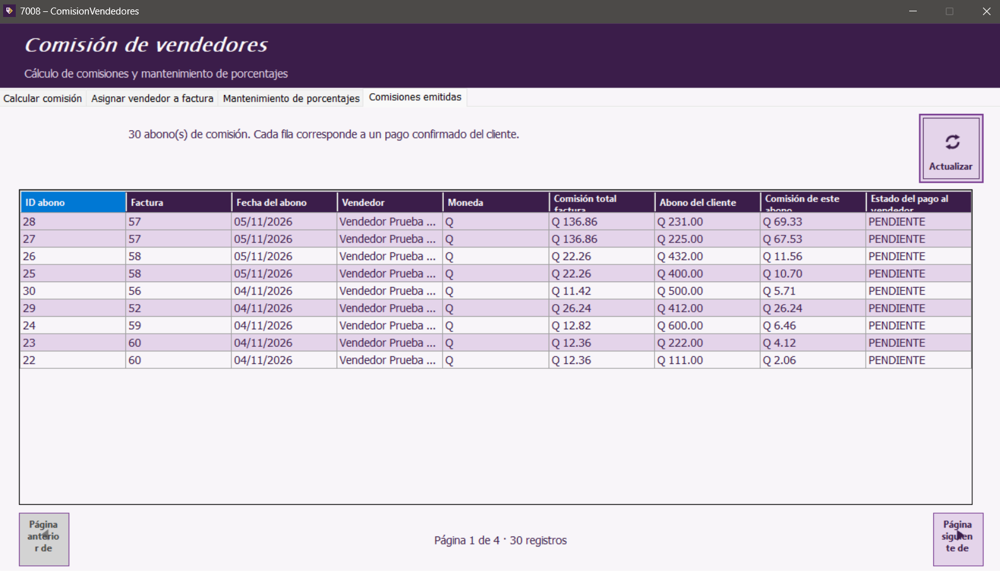

Inicio | Calcular comisión | Asignar vendedor a factura | Mantenimiento de porcentajes | Comisiones emitidas | Botones y mensajes
Consultar los movimientos
- Abre la pestaña Comisiones emitidas.
- Revisa la tabla de abonos de comisión. Cada fila representa un pago confirmado del cliente y la comisión proporcional que generó.
- Usa Actualizar para volver a cargar la información.
- Usa los controles de página inferiores para recorrer todos los registros.

La tabla muestra abono, factura, fecha, vendedor, moneda, comisión e información del pago al vendedor.
| Columna | Qué muestra |
|---|
| ID abono / Factura | Identifica el pago del cliente y la factura asociada. |
| Fecha del abono / Vendedor / Moneda | Fecha registrada, vendedor asociado y moneda de la operación. |
| Comisión total factura / Abono del cliente | Total de comisión relacionado con la factura y monto cobrado en ese abono. |
| Comisión de este abono / Estado del pago al vendedor | Comisión devengada por el abono y estado de su pago al vendedor. |
Manual de usuario · Comisión de vendedores · Aplicación de Ventas y cuentas por cobrar